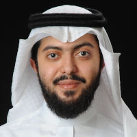
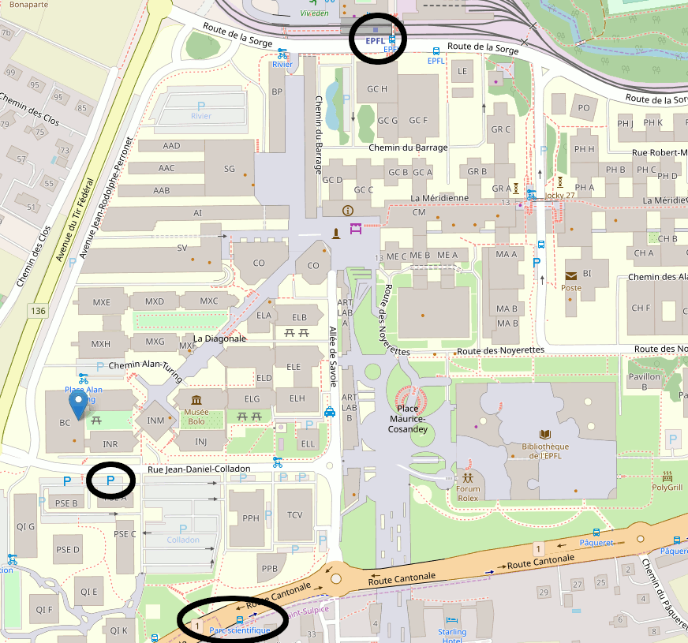

Research Agenda
Our research focuses on software and systems security. Despite efforts and improvements in bug discovery techniques, some exploitable vulnerabilities will remain. We target techniques that both enable developers to discover and remove bugs and make programs resilient against the exploitation of unknown or unpatched vulnerabilities.To discover bugs we propose (i) sanitization techniques that enforce a security property such as memory or type safety; given concrete program input, our sanitizers then flag any property violations and (ii) fuzzing techniques that leverage static and dynamic analysis to create program inputs to explore program areas that are not yet covered through existing test cases. To protect against exploitable vulnerabilities, we focus on control-flow integrity using specific language semantics, enforcing type integrity, and protecting selective data. Under this premise, we focus on compiler-based, runtime-based, and language-based protection mechanisms and security policies that increase the resilience of applications against attacks (in the presence of software vulnerabilities). All prototypes are released as open-source and we release talks on YouTube.
Key Topics
software security, system security, sanitization, software testing, fuzzing mitigation, fault isolation, compartmentalization.Frequently Asked Questions
Interested in joining HexHive? Read the advice for prospective students and how to apply. If you are an EPFL student and looking for a BSc, MSc, or PhD semester project, check out the project page.Interested in Capture the Flag? Come play with the (EPFL) polygl0ts.
Meet the members of the HexHive

Graduated PhD students and Post Docs
Andrés Sanchez
Researcher, fall '19 to spring '24
First job: Amazon
Adrian Herrera
ANU PhD '24
(co-advised by Tony Hosking)
First job: Interrupt Labs
Gwangmu Lee
Post Doc, spring '22 to spring '24
First job: CSCS Swiss National Supercomputing Centre

Naif Almakhdhub
Purdue PhD spring '20
(co-advised by Saurabh Bagchi)
First job: asst prof at KSU
Naif Almakhdhub
Purdue PhD spring '20
(co-advised by Saurabh Bagchi)
First job: asst prof at KSU
Past visitors and researchers:
- Zezhong Ren (visiting PhD student from University of Chinese Academy of Science, spring '24 and fall '24)
- Zheyu Ma (visiting PhD student from Tsinghia University, spring '24 and fall '24)
- Zurab Tsinadze (MSc research scholar, fall '22 to spring '24)
- Duo Xu (MSc research scholar, fall '21 to fall '23)
- Yishun Zeng (visiting PhD student from Tsinghua University, spring '23 and fall '23)
- Qinying Wang (visiting PhD student from Zhejiang University, spring '23 and fall '23)
- Zhiyuan Jiang (virtual visiting PhD student from NUDT fall '21 to spring '23)
- Jianhao Xu (visiting PhD student from Nanjing University, fall '22 and spring '23)
- Manuel Egele (visiting faculty during his sabbatical from BU, fall '21 and spring '22)
- Hossein Moghaddas (MSc research scholar, fall '21 and spring '22)
- Han Zheng (visiting MSc student from University of Chinese Academy of Sciences, spring '22 and fall '22)
- Qiang Liu (visiting PhD student from Zhejiang University, fall '21 and spring '22)
- Majid Salehi (visiting PhD student from KU Leuven, fall '21)
- Anil Kurmus (visiting researcher, fall '19)
- Sushant Dinesh (PhD student/MSc thesis, graduated spring '19)
- Alessandro Di Federico (visiting PhD student, fall '16)
Contact
| Address: |
EPFL IC IINFCOM HEXHIVE Bâtiment BC 160 Station 14 CH-1015 Lausanne |
| Office: | BC 160 (Mathias) |
| Lab: | BC 159 |

Directions: You can reach the BC building by metro m1 (stop "EPFL") or bus 701 (stop "Parc scientifique").
There is (very) limited parking next to BC. The HexHive offices are on the first floor of BC in the east.